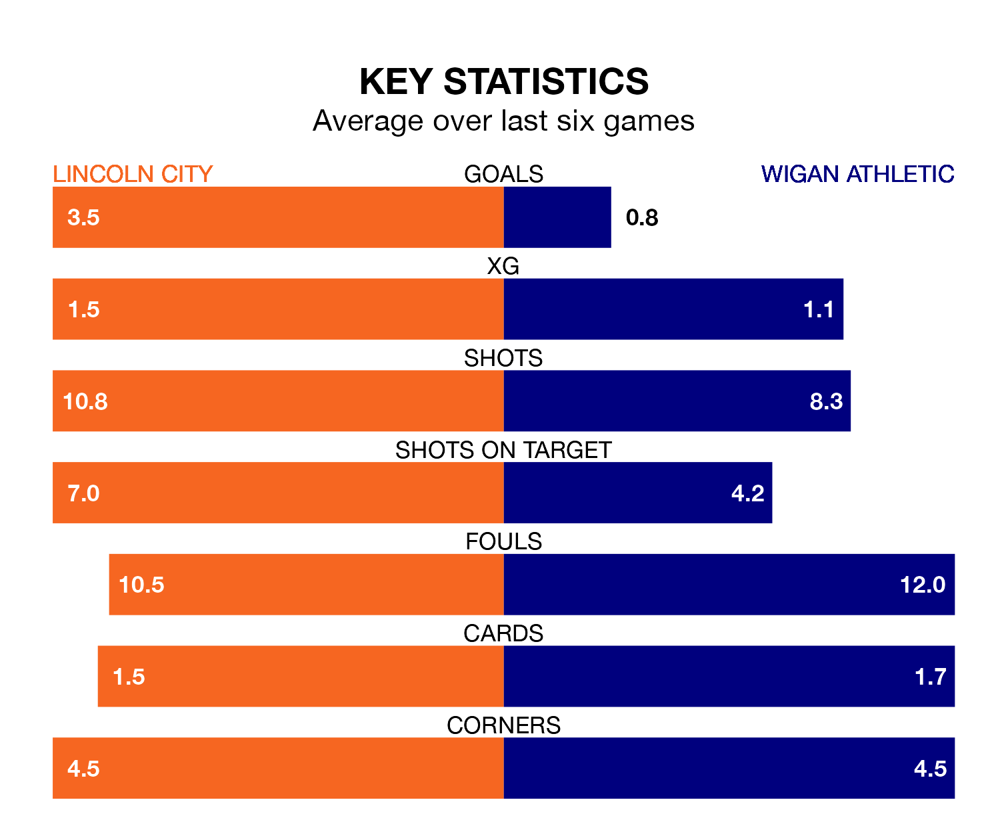

Lincoln City are heavy favourites to keep all three points at home in Saturday's kick-off against Wigan Athletic.
The Imps, who sit seventh in EFL League One with 42 games played, are priced at 1.6 to seal victory at the LNER Stadium.
Sitting four places and seven points behind them in the table, Wigan are 4.4 to win with *Betting Company*, while the draw is at 3.5.
With Lukas Jensen between the sticks, Lincoln can rely on one of the league's safest pair of hands. He has kept 18 clean sheets in his 41 appearances this season, and no 'keeper has prevented the opposition scoring more often in EFL League One.
In Wigan's net, Sam Tickle has 14 clean sheets in 43 games. He has conceded a goal every 79 minutes, 50% more often than the 119 minutes between goals for Jensen.
City are in fantastic form in EFL League One, with five wins and a draw from their last six games.
With a win and three draws over that period, Athletic's form is much worse – they have taken six points from 18, compared to the Imps' 16.
With 61 goals in 42 games so far this season, the hosts are scoring more than average in the league with 1.5 goals per game. And they are conceding fewer than average, letting in 35 goals at a rate of 0.8 per game.
The Latics, meanwhile, are average scorers, with 1.3 goals per game. They have also conceded 1.3 goals per game.
In the last five years, Lincoln and Wigan have played each other on five occasions. Lincoln won three of them, Wigan one, and they drew once.
On average, the Imps scored 1.4 goals and the Latics 1.2 in those matches.
Their last meeting was on December 9, when they played out a 0-0 draw.
Lincoln's last match was on April 6, a 1-1 draw against Reading, with Freddie Draper getting the goal for the Imps.
Wigan drew 2-2 with Charlton Athletic last time out, on Tuesday, with Charlie Kelman on the scoresheet.
Saturday's match will be refereed by Martin Coy, who has taken charge of 10 EFL League One games so far this season, issuing two red cards and booking 28 players. He has awarded six penalties.
The last Lincoln game Coy refereed was a 3-0 home win against Blackpool on August 26. He is yet to oversee a match featuring Wigan this season.
Updated: 10:01 (UTC), 12/04/24